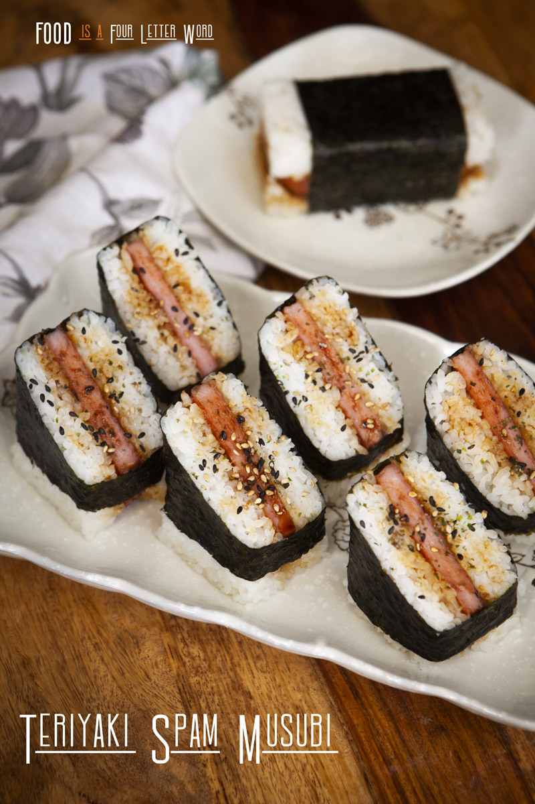

PAPA'S TERIYAKI SPAM MUSUBI

Blessed Be PAPA'S MUSUBI!
Spam arrived to to Hawai’i along with all the soldiers and sailors during WWII because of it’s long shelf life. It soon made it’s way into the hands of the locals and in the early 80’s, Barbara Funamura – a Japanese-American woman from Hawaii, invented Spam Musubi. It combines two local favorites, Spam and Rice – it’s then wrapped in nori for the perfect hand held snack. Spam Musubi is so popular all over Hawai’i you can pretty much get it anywhere on the islands, you’ll often find it at the check out stand at any convenience store. It’s hard to get spam musubi in the states, so I’ve been making it at home for years – I like to grill the Spam with with homemade Teriyaki sauce and a dash of Rice Vinegar, it’s balances out the flavors really well.
Ingredients
- 12 oz can of Spam
- 4 cups cooked short grain rice, cooled to room temp
- 2 sheets of sushi nori
- 2 tablespoons soy sauce
- 2 teaspoons honey
- 1 teaspoon rice vinegar
- 1/4 teaspoon ground black pepper
- 1/4 teaspoon Garlic powder
- Furikake, optional
Instructions
- In a small bowl, add 2 Tablespoons of Soy Sauce, 2 Teaspoons of Honey, 1 Teaspoon of Rice Vinegar, ¼ Teaspoon of Garlic Powder, ¼ Teaspoon of Ground Black Pepper – stir well and set aside.
- Cut the sheets of nori into thirds so you end up with 6 long pieces of nori. Open the can of Spam and cut it crosswise into 6 even slices.
- Use a large non-stick skillet, turn the heat to medium high and fry the Spam pieces for a few minutes on each side until they are light golden brown. Add the soy sauce mixture into the pan and let it cook until the sauce reduces and thickens. Coat both sides of the spam in the sauce then let them cool to room temp.
- Place once piece of nori vertically onto your workspace and place the musubi maker in the middle of it horizontally. Place about 1/3 cup of rice into the mold and even it out, place 1 piece of spam on top, then top it with another 1/3 Cup of Rice. Place the top of the press into the mold and press down firmly.
- While holding down on the top of the press, lift the mold up. Wrap one side of the nori up and place a little bit of water on the edge of the other end of the nori to seal it tightly. Rinse the mold and press with water & repeat the steps. You can serve the Spam Musubi as is, or diagonally cut them in half, spoon on any leftover teriyaki sauce from the pan and sprinkle on furikake. Enjoy!